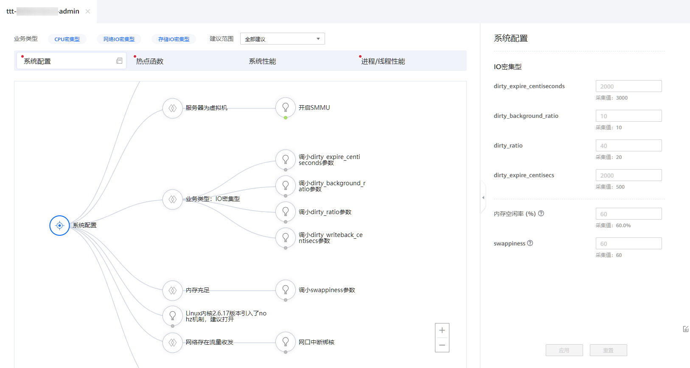
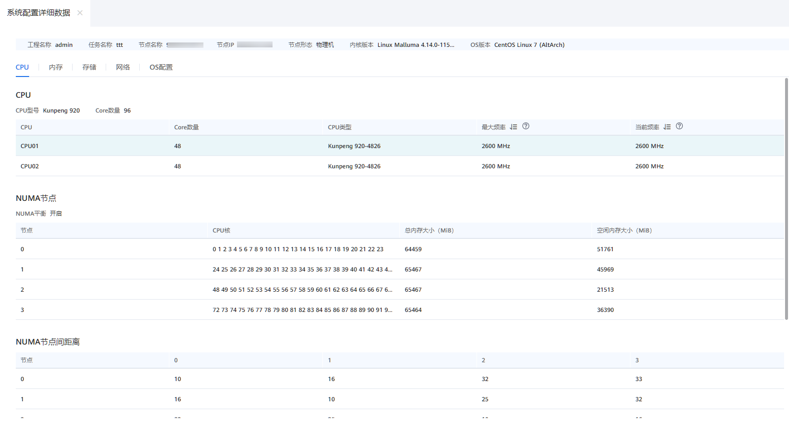

前提条件
已创建分析任务，并且成功完成分析。
操作步骤
- 在“工程管理”区域，依次单击指定工程和分析任务名称前的
 。
。展开节点列表。
- 单击节点名称查看分析结果。
打开分析结果页面。分析结果分为四大块内容：系统配置、热点函数、系统性能和进程/线程性能。默认显示的是系统配置分析结果。
图1 分析结果页面
- （可选）选择业务类型。
- 根据实际情况选择业务类型。可选类型包括：CPU密集型、网络IO密集型和存储IO密集型。可以选择1~3个业务类型。选中后，选项的文字颜色变为蓝色。默认三个选项均被选中。
- 根据实际情况选择建议范围。可以调节优化建议拓扑树显示“全部建议”或“经过阈值过滤的建议”。图2 选择业务类型

- 根据系统配置条件，进行调优设置。
- 可根据系统配置情况，对右侧系统配置指标参数进行调整。图3 系统配置调优指标
表1描述了系统配置指标的各项参数。表1 系统配置指标 指标
描述
dirty_expire_centiseconds
用于标识脏数据在缓存中允许保留的时长，即时间结束后需要被写入到磁盘中。如果业务的数据是连续性的写，可以适当调小此参数，这样可以有效避免IO集中，导致突发的IO等待。
dirty_background_ratio
页面占用总内存最大的比例（以memfree+Cached-Mapped为基准），超过这个值，pdflush线程会刷新脏页面到磁盘。增加这个值，系统会分配更多的内存用于写缓存，因而可以提升写磁盘性能。但对于磁盘写入操作为主的业务，可以调小这个值，避免数据积压太多最后成为瓶颈，可以结合业务并通过观察await的时间波动范围来识别。
dirty_ratio
表示脏页面占用总内存最大的比例，超过这个值，系统不会新增加脏页面，文件读写也变为同步模式。文件读写变为同步模式后，应用程序的文件读写操作的阻塞时间变长，会导致系统性能变慢。对于写入为主的业务，可以增加此参数，避免磁盘过早的进入到同步写状态。
dirty_expire_centisecs
该参数控制内核的脏数据刷新进程pdflush的运行间隔，单位是1/100秒。缺省数值是500 （5秒）。
- 如果系统持续地执行写入动作，那么需要降低该值，这样可以把尖峰的写操作削平成多次写操作。
- 如果系统是短期地尖峰式的写操作，并且写入数据不大（几十M/次）且内存有比较多富裕，那么应该增大此数值。
内存空闲率 (%)
该参数控制内存使用率。
- 当内存使用率过高时，它会降低服务器的性能，此时就需要提高内存空闲率，以使服务器健康运行。
- 在内存使用率低的情况下，调小swappiness参数，使用物理内存，尽量减少交换分区的使用，避免加大IO操作，影响系统性能。
swappiness
swappiness是一个Linux内核属性，用于设置将页面从物理内存交换到交换空间以及从页面缓存中删除页面之间的平衡。它基本上定义了系统使用交换空间的频率。
- 单击“应用”使用调整后的配置指标参数。
- 单击“重置”恢复默认指标参数。
- 查看分析结果页面的优化建议拓扑树图，单击根据配置条件
 ，单击
，单击 选择对应的调优建议。图4 优化建议拓扑树图
选择对应的调优建议。图4 优化建议拓扑树图
- 查看右侧调优建议中的相关配置、指标说明、优化建议及优化指导。单击
 确定采纳该调优建议，再次单击取消采纳该调优建议。图5 调优建议页面
确定采纳该调优建议，再次单击取消采纳该调优建议。图5 调优建议页面
- 已采纳的调优建议将会保留在关联报告中，单击页面右下角“关联报告”进入关联报告页面。
关联报告页面会显示已经采纳的所有调优建议，单击任务名称可进行查看。根据采纳的调优建议是否达到预期目标，单击左下角“有效”和“无效”进行确定。
图6 关联报告页面
- 可根据系统配置情况，对右侧系统配置指标参数进行调整。
- 单击“系统配置”右侧的
 查看系统配置详细数据。
查看系统配置详细数据。系统配置详细数据中包含CPU、内存、存储、网络和OS配置信息，默认显示的是CPU信息。
图7 查看系统配置详细数据
